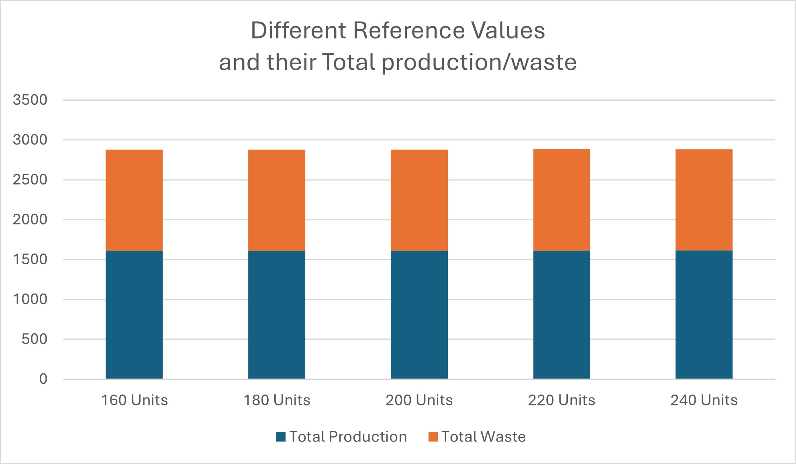
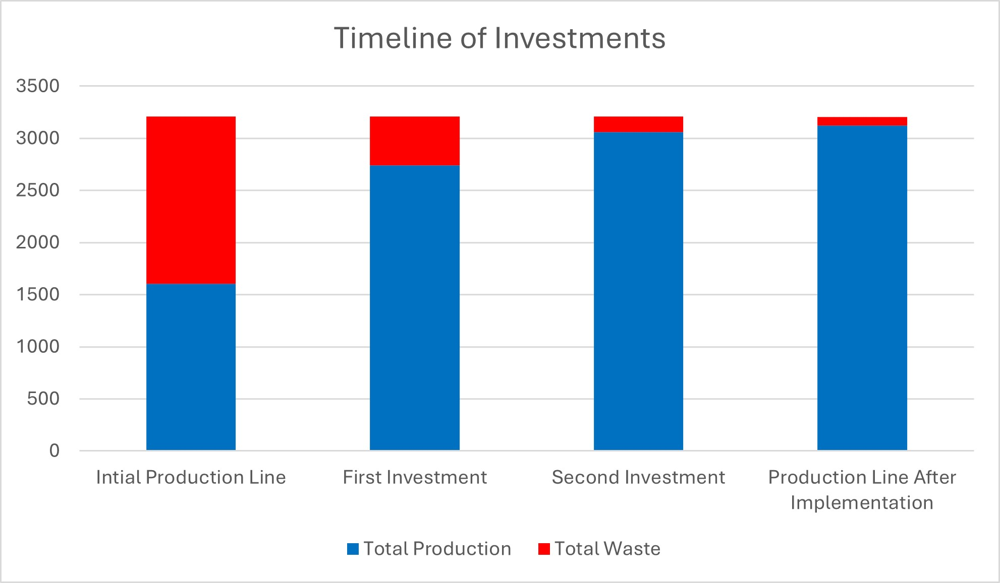

Below is a link to download the Excel file used to carry out the project. Please be aware that the numbers are randomly generated each time a refresh occurs, therefore, results may not be precise on the excel sheet. I took results from one screenshot and analysed from there. Any queries on the Excel sheet please contact me using the contact information at the bottom. I highly reccomend downloading the file and following along each part as it demonstrates my excel abilities, whilst also giving backup to my conclusions
The Excel File
Setting the scene
This study examines the production process of a miniature manufacturing company specializing in die-cast scale models of commercial airplanes and sports cars. The simulation utilizes a Microsoft Excel spreadsheet to model a series of sequential processes in an industrial setting. The production line consists of six stations: Order Setup, Casting, Painting, Assembly, Finishing, and Sorting and Boxing. Each station's capacity is described using statistical parameters, predominantly following normal distributions, with the exception of the Painting station, which follows a uniform distribution.
The primary objective of this research is to identify potential bottlenecks in the production line and propose solutions to optimize output while minimizing waste. Bottlenecks, as defined by Betterton (2012), are resources at which work-in-process (WIP) inventory queues are maximized or which significantly impede system performance by reducing throughput. These can be categorized as short-term (e.g., temporary staff absence) or long-term (e.g., equipment malfunction).
The study employs multiple simulations to enhance accuracy and provide insights into areas for improvement. The factory operates two uninterrupted 8-hour shifts daily, with productivity data already accounting for operator breaks and other necessities. By analyzing the throughput and variability of each station, this research aims to offer recommendations for enhancing the overall efficiency of the miniature manufacturing process.
In one hour of work, the Order Setup team can get ready materials for up to 250 units. This is a very
simple procedure, with a standard deviation of only 16 units per hour and a mean of 200. The next
station, Casting, can only process 100 units per hour, but due to the nature of the process and the
high temperatures required, it has a higher variability, with a standard deviation of 15 units per hour.
The capacity of the Painting station is in average 175 units, with a minimum of 100 (for more detailed
miniatures) and a maximum of 250 (for models demanding less detail). The Assembly unit also works
relatively fast and is capable of processing 200 units per hour, with a standard deviation of 20 units
per hour. The Finishing station oversees the quality control of the company and, therefore, tend to be
slightly faster than the preceding units. They can process, in average, 250 units, with a standard
deviation of 10. Finally, the Sorting and Boxing team can process 300 units per hour, also with an
almost negligible standard deviation of 15 miniatures per hour
Part One
A build up in inventory in the ‘Casting WIP’. This build up is because of the time it takes to throughput through this station in the production line. In my simulation we can see that at the end of the day around 1000 units on average were left at the end of the day to waste, as described in the table below. This unit waste is significantly larger than any other station at the end of the day, raising potential for bottlenecks in the production line.
-
Casting WIP 999.56 Units
-
Painting WIP101.15 Units
-
Assembely WIP 100.72 Units
-
Finishing WIP 100.72 Units
-
Sorting WIP 100.72 Units
With no investment or extra personnel, the best way the production line can reduce this build up is through Just-In-Time production. Using historical data on sales, trends and demand the team can predict the amount of units they will need to pass through the production line to correctly make enough units for the demand. Following this, batch size optimisation is key for this to work. The production line needs too find where possible to reduce unit throughput, this allows more frequent production throughput and stops build-up in the production line.
If the business had a demand of 10,000 units per week, with six working days would they be able to meet demand? From my simulation, we can see an average output of 1,612 units. If we were to times this by six, we would only receive a total output of 9,672 units. This would indicate that the company would be just short of the demand.
At the station ‘casting production’ we can see a delay; we know this is because of the nature of the process, building up the total units being left in ‘casting WIP’ as they can only process a mean of 100 units with a standard deviation of 15. This adds to the total waste and reduces the ability to meet the 10,000-unit demand.
As a suggestion, the manufacturing company should consider the investment of more machinery for casting. As the main hold up of production is the casting production, the addition of new machinery would increase the mean throughput and allow the following stations to increase productivity.
Part Two
I found that the best fixed value for the sorting station was 180 units. This minimised the waste whilst also keeping the total production like other reference values. As shown in the graph below, the results are tight, but on average, 180 units produces more and wastes less.

Eliminating waste completely would not be feasible for the production line without any investment within the process itself. The high volumes of waste suggest that the production line has a lot of inefficiencies, these come at a cost. Economically speaking, this would mean the company has to invest heavy into new machinery, more staff, and modern technologies.
A suggestion to the manager of the production process, to reduce waste and increase total production. The need to identify where the units are at waste is critical to reducing the waste. Investing in these stations would create a better waste management system and increase the total production to meet the demand.
Part Three
To reduce the impact of the bottleneck, we ran two simulations: Parallel processing and having a machine capacity increased by 100%. Both produced comparable results, increasing output, and reducing waste. However, what we saw over five hundred simulations is that the parallel processing on average, produced better results as shown below.
| *Over 500 Simulations* |
Parrallel Processing |
100% Machine Capacity |
| Average Output |
2742 Units |
2714 Units |
| Average Waste |
469 Units |
498 Units |
However, since adding a new machine to the production line, a new bottleneck arose further along in production. I found at ‘Painting WIP’, a build-up of units over the course of 16 hours was occurring. This is because, adding another machine into the production line near doubles the capacity of throughput, therefore, the painting production cannot throughput enough at the rate of work in progress.
After the shift to the right of the bottleneck to the painting WIP station, the marketing team suggested two new methods to help overcome the bottleneck to increase output and reduce waste. The first simulation was to increase the shift hours by four hours. This would increase throughput of units. In the simulation we can see it marginally reduced waste on average from five hundred simulations.

My other suggestion was to semi-automatise, increasing the average output by 50% and reducing the standard deviation by 30%. The figure above shows how this method was superior to adding four hours of work time. The waste is kept at a minimum and production is flourishing. After this discovery, I found the bottleneck shifted to the right again just not as vigorously as before. Taking place at the ‘Assembly WIP’ station. To battle this bottleneck, I suggested adding another person to the assembly line, creating a mix of parallel processing, and adding more hours into the day.
Part Four
I found that implementing this would increase average production by 25% and leave us with no bottlenecks. After running the simulation five hundred times, the average waste was reduced to 92. Below we can see the first ever production line (With no changes) all the way to the final production line (With all bottlenecks discovered).

This bar chart provided evidence of the success of the investment in adding another person into the Assembly WIP as we can see the decrease in waste, even though it isn’t as significant as some of the other changes it still shows a decrease in inventory back up.
After running our simulations, we could calculate the outcomes of the production line if we had demand of 12,000 units per week for the next three months. With the simulation we came to a total average output of 3000 units per day. This means that, running 6 days a week, we would have 18,000 units for that week.
This is 6,000 units over the demand, suggesting that the production line cannot run maximum unit throughput. As we would only need 2000 units per day, this means that the manager needs to decrease the production throughput by 1000 units per day. However, due to some waste, this could raise issues on meeting the demand in full. Therefore, my suggestion is to have 2100 units passed through to ensure demand is met. This would require a Mean of 140 units, Max of 160 and standard deviation of 16.
|
Total Production |
Total Waste |
| 2100 Units |
2166 |
25 |
| With 12,000 Sold |
12,846 (Over 6 days) |
846 Units wasted |
References
Betterton, C. E. and Silver, S. J. (2012) ‘Detecting bottlenecks in serial production lines - a focus on interdeparture time variance’, International journal of production research, 50(15), pp. 4158–4174. doi: 10.1080/00207543.2011.596847.
End of Project
Any critisisms, questions, advice, please find my contact details below
© Untitled. Design: HTML5 UP.